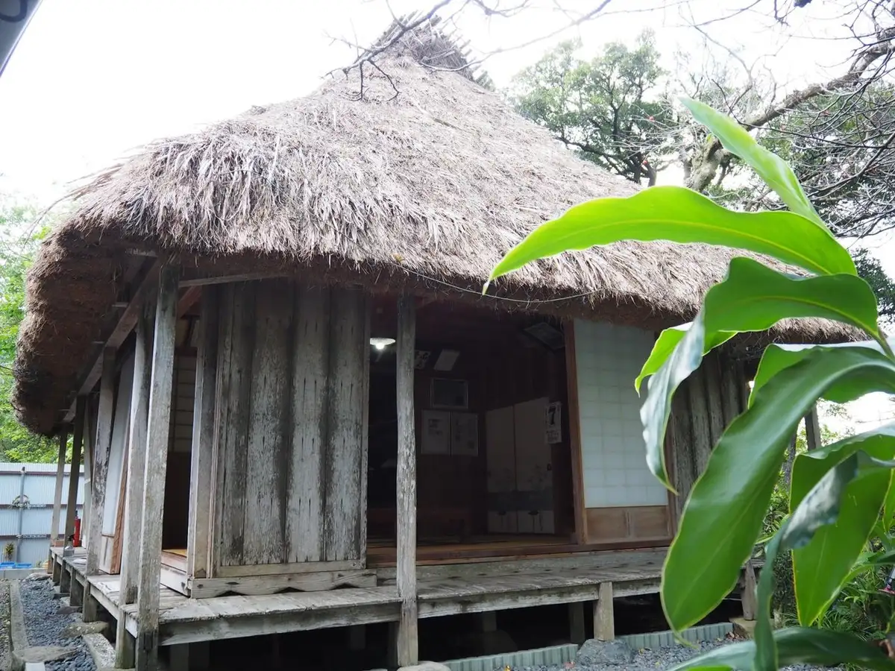
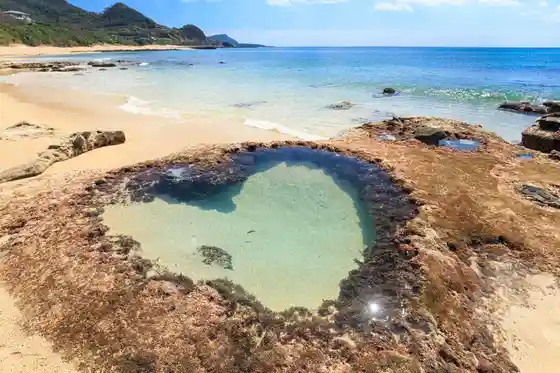
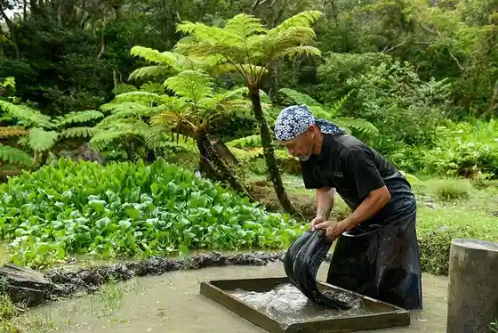
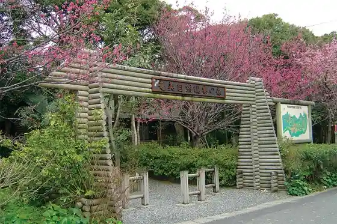

Japan / Kagoshima / Tatsugo
Tatsugo
Tatsugo · Kagoshima
Tatsugo
Highlighted on the Kagoshima map.

Sights
Saigo Nanshu Ryutaku Ato
Tatsugo, Kagoshima · 0997-62-3368 · Official / source link
Hatorokku
Tatsugo, Kagoshima · 0997-69-4512 · Official / source link

Kurasaki Coast
Tatsugo, Kagoshima · 0997-62-3111 · Official / source link
Dorozome Me Experience Kotei Kengaku (Oshima Tsumugi Village)
Tatsugo, Kagoshima · 0997-62-3100 · Official / source link

Amami Shizenkansatsu Forest
Tatsugo, Kagoshima · 0997-54-1329 · Official / source link

Kagambana Tonneru
Tatsugo, Kagoshima · 0997-57-7215 · Official / source link
Te Ko (Tebiro) Coast
Tatsugo, Kagoshima · 0997-62-3111 · Official / source link
Keihanhisa Kura
Tatsugo, Kagoshima · 0997-62-2988 · Official / source link
Ryugaku Kan (Saigo Matsu)
Tatsugo, Kagoshima · 0997-62-3110 · Official / source link
Aigana no Izumi
Tatsugo, Kagoshima · 0997-69-4512 · Official / source link
Sotetsu Basho Gunsei Chi (Yasuki Ya Ba)
Tatsugo, Kagoshima · 0997-62-3111 · Official / source link
Saigo Matsu Ato
Tatsugo, Kagoshima · 0997-69-4512 · Official / source link
La Fonte
Tatsugo, Kagoshima · 0997-62-3935 · Official / source link